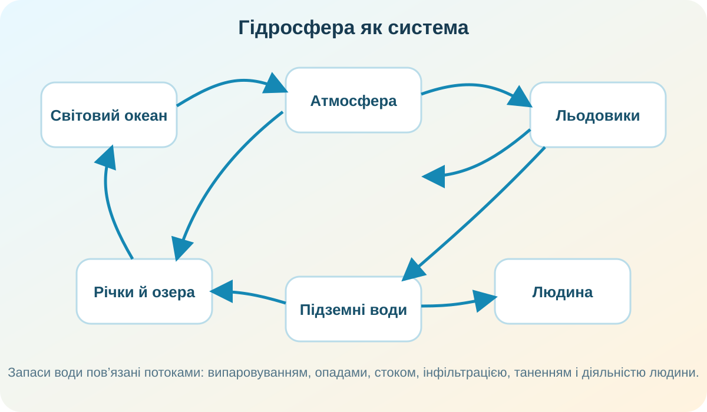
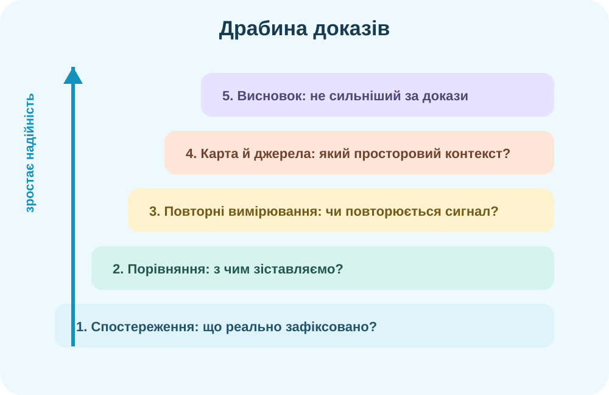

Світовий океан
Частини океану, солоність і температура, хвилі, течії, припливи, живі організми, ресурси та антропогенний тиск.
Підсумковий урок — не переказ §§36–46. Ви доводите, що вмієте читати карту, пояснювати процеси, працювати з даними, відрізняти доказ від припущення й переносити знання на нові ситуації.

Виберіть усі твердження, які описують взаємозв’язок, а не просто називають факти.

Підсумкове мислення починається з системи: океан ↔ атмосфера ↔ суходіл ↔ підземні води ↔ лід ↔ людина.
Тектонічна западина, дуже велика глибина, прісна вода.
Внутрішня безстічна водойма з високою солоністю.
Великий річковий басейн у вологому екваторіальному кліматі.
Натискайте елементи у правильній послідовності.
Після сильної зливи дві сусідні річки піднялися по-різному. Який висновок найкращий?
| Ділянка | Швидкість, м/с | Каламутність, ум. од. |
|---|---|---|
| A — вище міста | 0,7 | 12 |
| B — нижче будмайданчика | 0,8 | 31 |
| C — ще 8 км нижче | 0,6 | 19 |
Питання: яке твердження найкраще підтримують ці дані?

Сильний географічний висновок: спостереження → порівняння → повторювані вимірювання → карта/контекст → надійні джерела → обережний висновок.
USGS показує не лише випаровування, конденсацію та опади, а й водосховища, ґрунтові води, льодовики, океан і використання води людиною. Це зручна модель, щоб повторити всю тему одним зображенням.
Відкрити інтерактивну схему USGS →Офіційні схеми й матеріали USGS →Під час перегляду простежте одну молекулу води й назвіть щонайменше три переходи між частинами гідросфери.
NASA GPM: A Tour of the Water Cycle →Частини океану, солоність і температура, хвилі, течії, припливи, живі організми, ресурси та антропогенний тиск.
Річкові системи й басейни, вододіли, живлення і режим, ерозія й акумуляція; озера, болота, підземні води.
Льодовики й багаторічна мерзлота, штучні водойми, водопостачання, стічні води, моніторинг та безпечна поведінка.
Ситуація: громаді пропонують створити водосховище для водопостачання й регулювання стоку. Сформулюйте позицію, використовуючи щонайменше два різні блоки знань теми.
Не перечитуйте все підряд. Для кожного параграфа дайте собі три питання: що це? чому це відбувається? якими даними/картою це можна довести?
Електронний підручник →На одному аркуші намалюйте систему «океан — атмосфера — річка — озеро — підземні води — льодовик — людина» й підпишіть щонайменше 8 зв’язків між елементами.